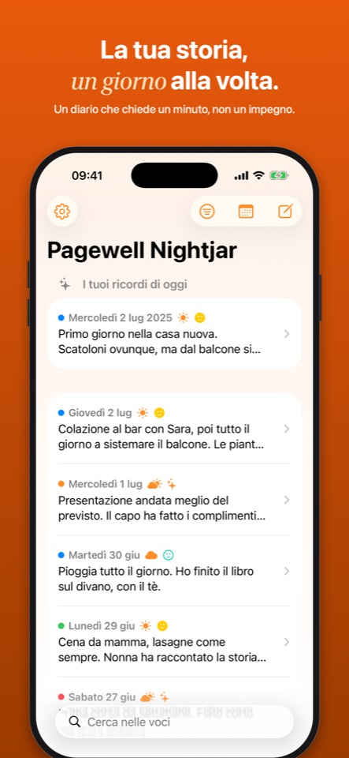
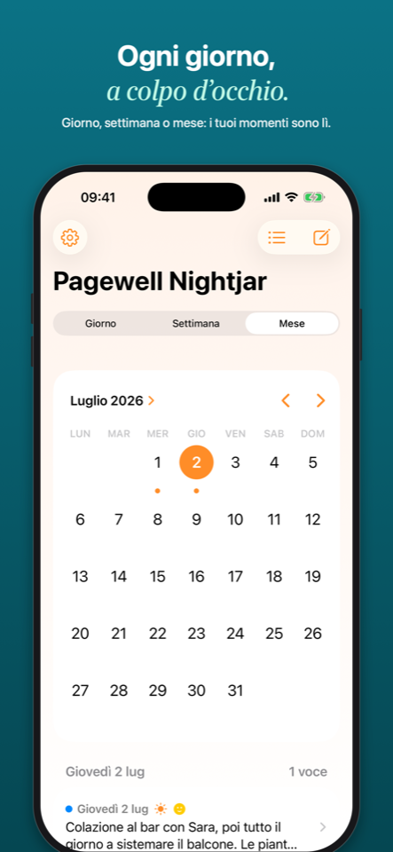
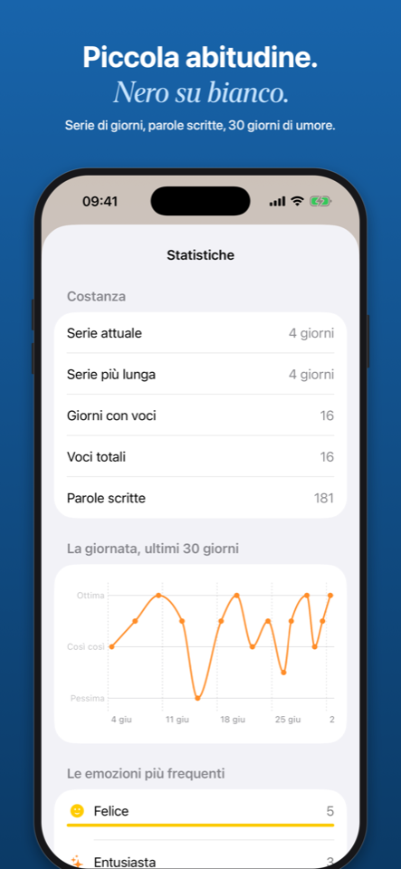

Il tuo diario personale, semplice davvero.
Scrivi la giornata in un minuto — privato, sincronizzato, senza account.
Testo libero con un suggerimento di scrittura al giorno, una foto se vuoi, e la possibilità di recuperare i giorni saltati.
La giornata in cinque livelli meteo, come ti senti in sette emozioni, il tipo di nota con i pallini colorati.
Vista per giorno, settimana o mese. E ogni mattina, le voci scritte lo stesso giorno negli anni passati.
Serie di giorni consecutivi, parole scritte e l'andamento dell'umore degli ultimi 30 giorni in un grafico chiaro.
Face ID per proteggere le tue pagine. I dati vivono sul tuo dispositivo e nel tuo iCloud privato: nessun server, nessun account.
Classico, Romantico, Natura, Futuristico, Inchiostro. Widget, Siri e promemoria giornaliero inclusi.



Pagewell Nightjar non raccoglie alcun dato: niente analytics, niente pubblicità, niente account. Le tue voci si sincronizzano tra i tuoi dispositivi tramite il tuo iCloud privato, a cui solo tu hai accesso. E quando vuoi, esporti tutto in un file di testo. Leggi la privacy policy →